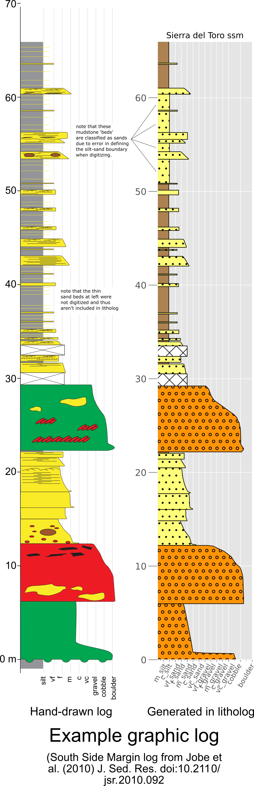

Demo of litholog functionality using the included demo data¶
litholog is a package-level extension of agile-geoscience/striplog, with additional features that focus on lithology, and an API that is geared toward facilitating machine learning and quantitative analysis.
The package provides two primary data structures:
Bedstores data from one bed (e.g., top, base, lithology, thickness, grain size, etc).
is equivalent to a
striplog.Interval
BedSequencestores a collection of
Bedsin stratigraphic orderis equivalent to a
striplog.Striplog
Other utilities include: - transformations for grain-size data from millimeter (mm) to log2 (a.k.a. Psi) units, which are far easier to work with than mm. - calculation of the following metrics at the BedSequence level: - net-to-gross - amalgamation ratio - psuedo gamma ray log - Hurst statistics (for determining facies clustering) - default lithology colors
The data provided with this demo come from two papers, and all logs were digitized using the Matlab digitizer included with this release. - 7 logs from Jobe et al. 2012 (html, pdf) - 11 logs from Jobe et al. 2010 (html, pdf),
An example log from that paper is shown here, hand-drawn in vector-art software (left) and plotted with litholog (right):

[1]:
# import stuff
import collections
import inspect
import numpy as np
import pandas as pd
import matplotlib.pyplot as plt
plt.style.use('ggplot')
import litholog
from litholog import utils, Bed
from litholog.sequence import io, BedSequence
from striplog import Component
Load the demo data from a csv using pandas¶
This first step uses utils within litholog to converts depth-grainsize pairs (e.g., that define a fining-upward profile in a bed) into pandas-friendly arrays. The outputs of this will be the fields shown below (e.g., depth_m, grain_size_mm). If you have differently formatted csv data, this step may not apply, or you may need a different util.
[2]:
# Converts 'string' arrays to numpy
transforms = {c : utils.string2array_matlab for c in ['depth_m',
'grain_size_mm']}
# Read the demo data
df = pd.read_csv('../data/demo_data.csv', converters=transforms)
# counts and prints the names of the logs in the data file
print(len(df.name.unique()),
'graphic logs imported:',
'\n',
df.name.unique())
df.head() # displays the first five rows of data
13 graphic logs imported:
['Karoo krf1' 'Karoo krf2' 'Karoo krf3' 'Karoo krf4' 'Karoo krf5'
'Magnolia' 'Pukearuhue' 'Sierra del Toro dc1' 'Sierra del Toro dc2'
'Sierra del Toro flame' 'Sierra del Toro h2o' 'Sierra del Toro ssm'
'Sierra del Toro wc']
[2]:
| name | count | collection | eod | eodnum | tops | th | gs_tops_mm | snd_shl | mean_gs_mm | max_gs_mm | ng | ar | depth_m | grain_size_mm | |
|---|---|---|---|---|---|---|---|---|---|---|---|---|---|---|---|
| 0 | Karoo krf1 | 1 | Skoorsteenberg | fan | 1 | 21.042456 | 0.392483 | 0.173762 | 1.0 | 0.173762 | 0.173762 | 0.772615 | 0.104762 | [21.0425, 20.65] | [0.1738, 0.1738] |
| 1 | Karoo krf1 | 1 | Skoorsteenberg | fan | 1 | 20.649974 | 0.244327 | 0.058315 | 0.0 | 0.058315 | 0.058315 | 0.772615 | 0.104762 | [20.65, 20.4056] | [0.0583, 0.0583] |
| 2 | Karoo krf1 | 1 | Skoorsteenberg | fan | 1 | 20.405647 | 0.041588 | 0.119996 | 1.0 | 0.119996 | 0.119996 | 0.772615 | 0.104762 | [20.4056, 20.3641] | [0.12, 0.12] |
| 3 | Karoo krf1 | 1 | Skoorsteenberg | fan | 1 | 20.364059 | 0.046786 | 0.058315 | 0.0 | 0.058315 | 0.058315 | 0.772615 | 0.104762 | [20.3641, 20.3173] | [0.0583, 0.0583] |
| 4 | Karoo krf1 | 1 | Skoorsteenberg | fan | 1 | 20.317273 | 0.106568 | 0.133082 | 1.0 | 0.133082 | 0.133082 | 0.772615 | 0.104762 | [20.3173, 20.2107] | [0.1331, 0.1331] |
The variable df is just a pandas DataFrame at this point - it hasn’t been put into litholog format yet.
Notice that the columns ng (net-to-gross) and ar (amalgamation ratio) are the same for each graphic log. This csv was processed using Matlab, and ng and ar were calculated there. Not to worry, litholog can also calculate these metrics, which we will show you how to do below.
Use wentworth to make log2 grain size data¶
Before we translate the dataframe into BedSequences, let’s create a log2 grain-size column. We will use the functionality of wentworth to do this, and we will create PSI units instead of PHI units, because they increase with increasing grain size. We simply take the grain_size_mm column and translate it to psi units (grain_size_psi):
[3]:
df['grain_size_psi'] = df.grain_size_mm.apply(lambda x: np.round(litholog.wentworth.gs2psi(x),4))
df.head()
[3]:
| name | count | collection | eod | eodnum | tops | th | gs_tops_mm | snd_shl | mean_gs_mm | max_gs_mm | ng | ar | depth_m | grain_size_mm | grain_size_psi | |
|---|---|---|---|---|---|---|---|---|---|---|---|---|---|---|---|---|
| 0 | Karoo krf1 | 1 | Skoorsteenberg | fan | 1 | 21.042456 | 0.392483 | 0.173762 | 1.0 | 0.173762 | 0.173762 | 0.772615 | 0.104762 | [21.0425, 20.65] | [0.1738, 0.1738] | [-2.5245, -2.5245] |
| 1 | Karoo krf1 | 1 | Skoorsteenberg | fan | 1 | 20.649974 | 0.244327 | 0.058315 | 0.0 | 0.058315 | 0.058315 | 0.772615 | 0.104762 | [20.65, 20.4056] | [0.0583, 0.0583] | [-4.1004, -4.1004] |
| 2 | Karoo krf1 | 1 | Skoorsteenberg | fan | 1 | 20.405647 | 0.041588 | 0.119996 | 1.0 | 0.119996 | 0.119996 | 0.772615 | 0.104762 | [20.4056, 20.3641] | [0.12, 0.12] | [-3.0589, -3.0589] |
| 3 | Karoo krf1 | 1 | Skoorsteenberg | fan | 1 | 20.364059 | 0.046786 | 0.058315 | 0.0 | 0.058315 | 0.058315 | 0.772615 | 0.104762 | [20.3641, 20.3173] | [0.0583, 0.0583] | [-4.1004, -4.1004] |
| 4 | Karoo krf1 | 1 | Skoorsteenberg | fan | 1 | 20.317273 | 0.106568 | 0.133082 | 1.0 | 0.133082 | 0.133082 | 0.772615 | 0.104762 | [20.3173, 20.2107] | [0.1331, 0.1331] | [-2.9094, -2.9094] |
Convert dataframe to BedSequences¶
This is the step that will convert our dataframe into BedSequences (equivalent to a striplog.Striplog) that contains Beds (equivalent to striplog.Intervals).
The component map sets the primary data for each Bed - see other ways to do this in the litholog_basics.ipynb
[4]:
# Columns shared by whole sequences (i.e., shared by an entire graphic log)
METACOLS = ['name', 'collection', 'ng', 'ar']
# Columns of bed-level data, including the psi column we just made
DATACOLS = ['th', 'gs_tops_mm', 'snd_shl', 'depth_m',
'gs_tops_mm', 'mean_gs_mm', 'max_gs_mm', 'grain_size_mm','grain_size_psi']
# Convert dataframe to a list of `BedSequence`s
seqs = []
for group, values in df.groupby('name'):
seqs.append(
BedSequence.from_dataframe(
values,
thickcol='th',
component_map=litholog.defaults.DEFAULT_COMPONENT_MAP,
metacols=METACOLS,
datacols=DATACOLS,
)
)
# Show name + eod + number of beds of each
print(len(seqs),'logs imported as BedSequences')
[(s.metadata['name'], len(s),'Beds') for s in seqs]
13 logs imported as BedSequences
[4]:
[('Karoo krf1', 105, 'Beds'),
('Karoo krf2', 20, 'Beds'),
('Karoo krf3', 42, 'Beds'),
('Karoo krf4', 15, 'Beds'),
('Karoo krf5', 51, 'Beds'),
('Magnolia', 181, 'Beds'),
('Pukearuhue', 211, 'Beds'),
('Sierra del Toro dc1', 166, 'Beds'),
('Sierra del Toro dc2', 44, 'Beds'),
('Sierra del Toro flame', 63, 'Beds'),
('Sierra del Toro h2o', 66, 'Beds'),
('Sierra del Toro ssm', 54, 'Beds'),
('Sierra del Toro wc', 38, 'Beds')]
[5]:
# nice way to parse data to get only BedSequences with more than 50 sand beds
fifty = list(filter(lambda s: len(s.get_field('th', 'sand')) >= 50, seqs))
# display the names
[(s.metadata['name']) for s in fifty]
[5]:
['Karoo krf1', 'Magnolia', 'Pukearuhue', 'Sierra del Toro dc1']
Basic data retrieval from a BedSequence and its Beds¶
BedSequence¶
[6]:
# Choose two logs to use as examples
magnolia = seqs[5] # a core description from the Gulf of Mexico
testseq = seqs[-2] # an outcrop log from Chile
# see what they look like
[magnolia, testseq]
[6]:
[Striplog(181 Intervals, start=0.0, stop=59.99934759384238),
Striplog(54 Intervals, start=0.0, stop=65.9949520108118)]
[7]:
# Order is important for logs, and it is either elevation or depth
print('Magnolia is a core so it has order:',magnolia.order,'\n'
'all other demo BedSequences are elevation ordered')
# here are all the orders:
[[s.order, s.metadata['name']] for s in seqs]
Magnolia is a core so it has order: depth
all other demo BedSequences are elevation ordered
[7]:
[['elevation', 'Karoo krf1'],
['elevation', 'Karoo krf2'],
['elevation', 'Karoo krf3'],
['elevation', 'Karoo krf4'],
['elevation', 'Karoo krf5'],
['depth', 'Magnolia'],
['elevation', 'Pukearuhue'],
['elevation', 'Sierra del Toro dc1'],
['elevation', 'Sierra del Toro dc2'],
['elevation', 'Sierra del Toro flame'],
['elevation', 'Sierra del Toro h2o'],
['elevation', 'Sierra del Toro ssm'],
['elevation', 'Sierra del Toro wc']]
[8]:
# access the base and top of a BedSequence
testseq.start, testseq.stop
[8]:
(Position({'middle': 0.0, 'upper': 0.0, 'lower': 0.0, 'units': 'm'}),
Position({'middle': 65.9949520108118, 'units': 'm'}))
[9]:
# Access the metadata
print(testseq.metadata)
testseq.metadata['ng']
{'name': 'Sierra del Toro ssm', 'collection': 'Cerro Toro', 'ng': 0.6080868551240269, 'ar': 0.148148148148148}
[9]:
0.6080868551240269
[10]:
# Access the `data` fields, which are numpy arrays
print(type(testseq.get_field('th')))
print(testseq.get_field('th'))
<class 'numpy.ndarray'>
[2.30115381 0.13448302 2.53276345 0.65000124 1.70251761 0.11440395
2.27173565 0.73545399 0.40128938 0.91202132 0.80987493 2.56021613
0.08674654 0.65059908 0.49879263 1.42770355 0.36520843 1.64696757
0.36250413 0.93410444 0.8749703 0.20539209 0.11501957 0.63011803
1.04563246 0.84413037 0.10892005 0.9094824 0.32676014 2.78533022
0.14018841 0.84286117 0.10903543 0.76661329 0.36857949 0.52081885
0.20031494 0.15624565 0.44075646 1.11921999 0.63592045 0.17169852
1.05562794 1.29308313 7.03981974 0.14640267 0.62390062 0.92664279
2.7617331 1.68582241 1.21019242 2.62953795 6.22164738 5.98399271]
[11]:
print('total thickness is',testseq.get_field('th').sum(),'meters')
print('maximum Bed thickness is',testseq.max_field('th'),'meters')
print('minimum Bed thickness is',testseq.min_field('th'),'meters')
print('maximum grain size is',testseq.max_field('grain_size_mm'),'mm')
total thickness is 65.99495201081183 meters
maximum Bed thickness is 7.0398197437568495 meters
minimum Bed thickness is 0.08674654453624701 meters
maximum grain size is 369.3312 mm
Bed¶
Now let’s take a look at one Bed. All Beds must have a top, base, and data, which can be array or dict-like. You will note that there is a primary field as well, which is defined using the Component from striplog or a component map, as we did above
[12]:
testseq[-1] # In elevation order, the lowermost bed is the last one [-1] instead of the first one [0]
[12]:
| top | 5.983992709481339 | ||||||||||||||||
| primary |
| ||||||||||||||||
| summary | 5.98 m of gravel | ||||||||||||||||
| description | |||||||||||||||||
| data |
| ||||||||||||||||
| base | 0.0 |
[13]:
# if a log is elevation-ordered, the last bed should have a base at zero
testseq[-1].base
[13]:
| upper | 0.0 |
| middle | 0.0 |
| lower | 0.0 |
[14]:
# what about a depth-oprdered core?
magnolia[0].top
# if this core was really in depth units (e.g., measured depth),
# the top would be whatever depth the core top was. In this case,
# the depths were manually transformed to meters prior to digitization
[14]:
| upper | 0.0 |
| middle | 0.0 |
| lower | 0.0 |
[15]:
print(testseq[-1].top.upper) # see the striplog Interval class for info on upper, middle, and lower
print(testseq[-1].primary.lithology)
print(testseq[-1].data['mean_gs_mm'])
print('Mean grain size:',litholog.wentworth.gs2name(testseq[-1].data['mean_gs_mm']))
print('Grain size at top of bed:',litholog.wentworth.gs2name(testseq[-1].data['gs_tops_mm']))
5.983992709481339
gravel
15.4942750959797
Mean grain size: m_gravel
Grain size at top of bed: m_sand
[16]:
# Let's look at the uppermost bed now
print(testseq[0].lithology)
print(testseq[0].summary())
mud
2.30 m of mud
[17]:
# get one bed top using an index
print(testseq[0].top.middle)
# get the first five bed tops using list comprehension (see striplog docs for attributes of top and base (e.g., base, middle, upper))
print('first five',[bed.top.middle for bed in testseq[0:5]])
# or you can build a simple loop
for bed in testseq[0:5]:
print(bed.top.middle)
65.9949520108118
first five [65.9949520108118, 63.693798197750205, 63.5593151827011, 61.0265517326105, 60.3765504932067]
65.9949520108118
63.693798197750205
63.5593151827011
61.0265517326105
60.3765504932067
[18]:
# lets look at a covered interval - note the NaNs for grain size
testseq[-11]
[18]:
| top | 30.5227749209062 | ||||||||||||||||
| primary |
| ||||||||||||||||
| summary | 1.29 m of missing | ||||||||||||||||
| description | |||||||||||||||||
| data |
| ||||||||||||||||
| base | 29.22969179482884 |
Plotting¶
Basic plotting¶
[19]:
# the most simple plot, but doesnt include any bed-level grain size data (e.g., fining-upwards)
testseq.plot()
Including intra-Bed grain-size data in a plot¶
[20]:
# here is a little nicer way to plot it that includes the grain size data for each bed
fig, ax = plt.subplots(figsize=[3,20])
testseq.plot(ax=ax,
legend=litholog.defaults.litholegend,
width_field='grain_size_psi',
depth_field='depth_m',
wentworth='fine'
)
ax.set_title(testseq.metadata['name']);
# can save it by uncommenting this line
#plt.savefig('testseq.svg')
Extracting fining-upwards profiles from a Bed¶
[21]:
gs=testseq[-1].data['grain_size_psi'] # get just one field from a Bed
de=testseq[-1].data['depth_m']
plt.plot(gs,de,'k')
if testseq.order=='depth':
plt.gca().invert_yaxis()
print('depth ordered')
plt.title('Fining upward trend from one Bed');
[22]:
# and we can do it for all beds that are classified as `sand`:
fig, ax = plt.subplots()
for bed in testseq:
if bed.lithology=='sand':
gs=bed.data['grain_size_psi']
de=bed.data['depth_m']
de=np.max(de)-de # normalize to zero so they will all plot together
if testseq.order=='elevation':
de=np.flip(de)
ax.plot(gs,de,'k')
Flipping the order of a BedSequence¶
[23]:
testseq.order
[23]:
'elevation'
[31]:
# flipping to depth order (Note - this doesnt change the BedSequence at all, just replots it)
testseq.flip_convention(depth_key='depth_m').plot(
legend=litholog.defaults.litholegend,
fig_width=3,
aspect=5,
width_field='grain_size_psi',
depth_field='depth_m',
wentworth='coarse');
# note that this doesn't change the order, it just creates the plot
print(testseq.order)
elevation
[25]:
# Now let's flip Magnolia from depth to elevation
magnolia.flip_convention(depth_key='depth_m').plot(
legend=litholog.defaults.litholegend,
fig_width=3,
aspect=5,
width_field='grain_size_psi',
depth_field='depth_m',
wentworth='coarse')
Plot mulitple logs at the same scale (i.e., a correlation panel)¶
By using matplotlib’s subplots, we can plot several BedSequences at the same scale, which is commonly done for many purposes, including creating correlation panels. Note that this functionality could be vastly improved upon, but it’ll do for now.
[26]:
fig, ax = plt.subplots(ncols=3, sharey=True, figsize=(10,20))
seqs[-4].plot(legend=litholog.defaults.litholegend,
width_field='grain_size_psi',
depth_field='depth_m',
ax=ax[0])
seqs[-3].plot(legend=litholog.defaults.litholegend,
width_field='grain_size_psi',
depth_field='depth_m',
ax=ax[1])
seqs[-2].plot(legend=litholog.defaults.litholegend,
width_field='grain_size_psi',
depth_field='depth_m',
ax=ax[2])
ax[0].set_ylim([0,110]); # could clean this up into a function to recommend ylim, but for now it's fine
Statistics for BedSequences¶
[27]:
print(testseq.metadata)
# Properties computed on the fly
print(testseq.net_to_gross,';',testseq.amalgamation_ratio)
print('N:G from Matlab:',round(testseq.metadata['ng'],3),'\n',
'N:G from litholog:',round(testseq.net_to_gross,3))
{'name': 'Sierra del Toro ssm', 'collection': 'Cerro Toro', 'ng': 0.6080868551240269, 'ar': 0.148148148148148}
0.4225178464687548 ; 0.2857142857142857
N:G from Matlab: 0.608
N:G from litholog: 0.423
[28]:
# Hurst statistics
print(testseq.hurst_K('th', 'sand'))
# Returns (D, p, hurst_K)
testseq.hurst_D('th', 'sand', nsamples=10000)
0.7988809878584096
[28]:
(1.875899576746385, 0.0231, 0.7988809878584096)
Pseudo gamma-ray log¶
We include functionality to create a simple pseudo GR curve of a BedSequence.
First, let’s define some functions to help us make this plot. Note, these functions only really work when you are plotting the same log (i.e., the log itself and the pseudo GR) - if you are plotting two logs together, see above example…
[29]:
def suggest_figsize(sequence, aspect=10):
"""
Defining default a total thickness -> figure size mapping.
"""
suggest_h = max(10, min(sequence.cum, 50))
suggest_w = suggest_h / aspect
return (suggest_w, suggest_h)
def strip_fig_extra_columns(ax_num, sequence, ncols, exxon_style=True, figsize=None, aspect=10):
"""
Creates a fig with `ncol` axes and plots `sequence` on one of them.
If `exxon_style`, plots `sequence` on first axis, otherwise last axis.
Returns
-------
fig, ax
"""
w, h = suggest_figsize(sequence, aspect=aspect)
print(w, h)
fig, ax = plt.subplots(ncols=ncols, sharey=True, figsize=(w*ncols, h))
#fig.subplots_adjust(wspace=0.)
sequence.plot(legend=litholog.defaults.litholegend,
width_field='grain_size_psi',
depth_field='depth_m',
ax=ax[ax_num])
return fig, ax
[30]:
# Now let's plot it
# The values you see are the defaults:
ds, pgr = testseq.pseudo_gamma_simple(
gs_field='grain_size_mm',
depth_field='depth_m',
resolution=0.2,
gs_cutoff=0.0625,
gamma_range=(30, 180),
sigma=0.1,
noise=10.
)
fig, ax = strip_fig_extra_columns(0, testseq, 2, aspect=9)
cutoff = 100
ax[1].plot(pgr, ds, 'k')
ax[1].fill_betweenx(ds, pgr, np.repeat(cutoff, ds.size), where=(pgr<cutoff), color='yellow')
ax[1].set_xlim([0,200])
5.555555555555555 50
<ipython-input-30-9af1fb0682f0>:18: RuntimeWarning: invalid value encountered in less
ax[1].fill_betweenx(ds, pgr, np.repeat(cutoff, ds.size), where=(pgr<cutoff), color='yellow')
[30]:
(0.0, 200.0)
Other methods not demonstrated here¶
There are a few methods that we didn’t demonstrate here, including a resample_data , which is handy for depth-based resampling of grain size data (e.g., to export into Petrel or other software).
We would love your feedback on litholog and pull-requests to make it better!
[ ]: